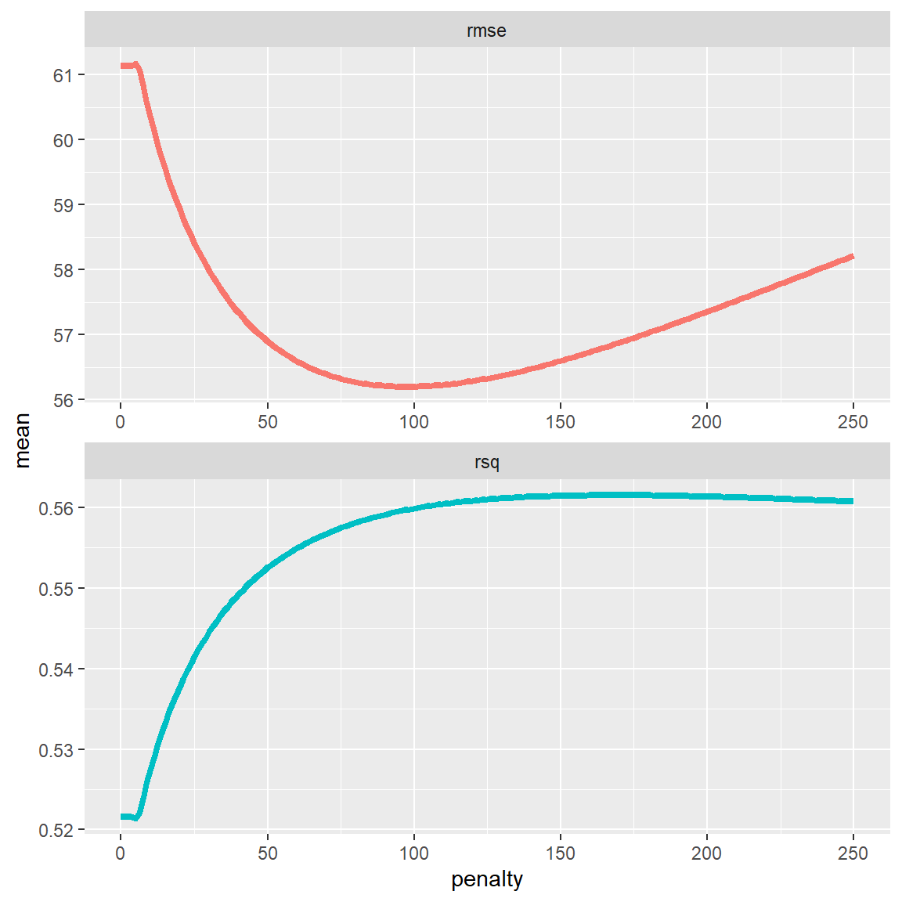
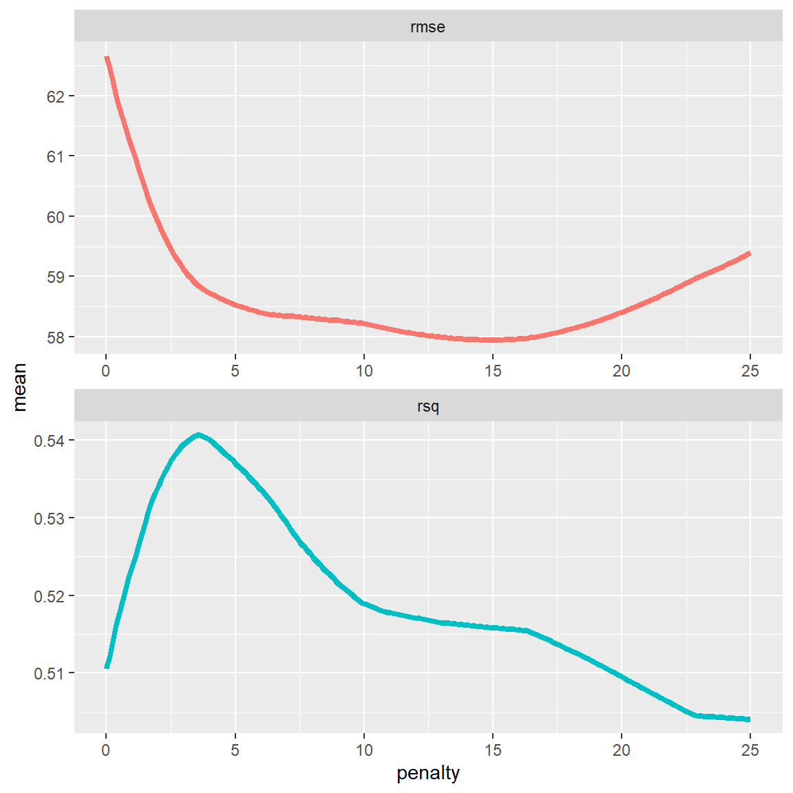

Tuning
|
Applied Machine Learning with R The R Bootcamp @ AMLD |

|

from xkcd.com
Overview
By the end of this practical you will know how to:
- Use cross-validation to select optimal model tuning parameters for decision trees and random forests.
- Compare ‘standard’ regression with lasso and ridge penalised regression.
- Use cross-validation to estimate future test accuracy.
Tasks
In this practical, we will again predict the price of Airbnbs located in Berlin.
A - Setup
Open your
TheRBootcampR project. It should already have the folders1_Dataand2_Code.Open a new R script and save it as a new file called
Tuning_practical.Rin the2_Codefolder.Using
library()load the set of packages for this practical listed in the packages section above.
# Load packages necessary for this script
library(tidyverse)
library(tidymodels)
tidymodels_prefer() # to resolve common conflicts- Run the code below to load the airbnb dataset.
# airbnb data
airbnb <- read_csv(file = "1_Data/airbnb.csv")B - Data splitting
- Create an initial split of the data, where you allocate only 50% of the data to the training set (usually this proportion is higher, but then model fitting takes ages) and where you stratify for the
pricevariable. Save it asairbnb_split
airbnb_split <- initial_split(airbnb, stata = price, prop = .75)- Using the
training()function, create a training set and call itairbnb_train.
airbnb_train <- training(airbnb_split)- Using the
testing()function, create a training set and call itairbnb_test.
airbnb_test <- testing(airbnb_split)C - Setup resampling scheme
- In this practical, we will use 10-fold cross-validation. Use
vfold_cv()to set this up and add theairbnb_traindata as first argument. Also, set the argumentv = 10to specify the number of folds. Save the ouput asairbnb_folds.
# Use 10-fold cross validation
airbnb_folds <- XX(XX, XX = XX) # Use 10-fold cross validation
airbnb_folds <- vfold_cv(airbnb_train, v = 10) - To speed up the model tuning afterwards, execute the following code (this will parallelize the tuning process).
doParallel::registerDoParallel()D - Regression (standard)
- Fit a standard regression model on the training data. By now you know how to do that =)
# create recipe
lm_recipe <-
recipe(price ~ ., data = airbnb_train) %>%
step_dummy(all_nominal_predictors())
# set up the regression model
lm_model <-
linear_reg() %>%
set_engine("lm") %>%
set_mode("regression")
# lm workflow
lm_workflow <-
workflow() %>%
add_recipe(lm_recipe) %>%
add_model(lm_model)
# Fit the regression model (no resampling as there's no tuning involved)
lm_res <-
lm_workflow %>%
fit(airbnb_train)E - Ridge Regression
- Define a recipe called
ridge_recipe. Use the same recipe as with the regression above (lm_recipe).
# create recipe
ridge_recipe <-
recipe(price ~ ., data = airbnb_train) %>%
step_dummy(all_nominal_predictors())- To ensure that all parameters are penalized equally, let’s add an additional pre-processing step:
step_normalize(all_numeric_predictors()). Add this step to theridge_recipe.
# create recipe
ridge_recipe <-
recipe(price ~ ., data = airbnb_train) %>%
step_dummy(all_nominal_predictors()) %>%
step_normalize(all_numeric_predictors())- Create a ridge regression model, again using the
linear_reg()model, but this time with theglmnetengine. Withinlinear_reg(), set the argumentmixtureto 0 andpenaltytotune(). Save the output asridge_model
# set up the ridge regression model
XX <-
XX(XX = XX, XX = XX) %>%
set_engine(XX) %>%
set_mode("regression")# set up the ridge regression model
ridge_model <-
linear_reg(mixture = 0, penalty = tune()) %>%
set_engine("glmnet") %>%
set_mode("regression")- Create a workflow called
ridge_workflowusingworkflow()and add theridge_recipeandridge_modelobjects.
# ridge workflow
ridge_workflow <-
workflow() %>%
add_recipe(ridge_recipe) %>%
add_model(ridge_model)- Set up a grid of tuning parameters. Here we only have one parameter
penalty. Usegrid_regular()to do so, and pass itpenalty()as first argument andlevels = 50as second argument. Call itpenalty_grid.
XX <- XX(XX, XX = XX)penalty_grid <- grid_regular(penalty(), levels = 50)- Tune the model on the training data. To do so using our resampling scheme, use the
tune_grid()function instead of thefit()orfit_resamples()function. Pass it the defined workflow as first argument and set theresamplesargument toairbnb_folds, and thegridargument topenalty_grid. Save the output asridge_grid.
# tune the penalty parameter
ridge_grid <-
ridge_workflow %>%
tune_grid(resamples = airbnb_folds,
grid = penalty_grid)- Use
collect_metrics()to evaluate the cross-validation performance of the model across the different values of the penalty parameter.
collect_metrics(ridge_grid)# A tibble: 100 x 7
penalty .metric .estimator mean n std_err .config
<dbl> <chr> <chr> <dbl> <int> <dbl> <chr>
1 1 e-10 rmse standard 61.1 10 19.7 Preprocessor1_Model01
2 1 e-10 rsq standard 0.522 10 0.0371 Preprocessor1_Model01
3 1.60e-10 rmse standard 61.1 10 19.7 Preprocessor1_Model02
4 1.60e-10 rsq standard 0.522 10 0.0371 Preprocessor1_Model02
5 2.56e-10 rmse standard 61.1 10 19.7 Preprocessor1_Model03
6 2.56e-10 rsq standard 0.522 10 0.0371 Preprocessor1_Model03
7 4.09e-10 rmse standard 61.1 10 19.7 Preprocessor1_Model04
8 4.09e-10 rsq standard 0.522 10 0.0371 Preprocessor1_Model04
9 6.55e-10 rmse standard 61.1 10 19.7 Preprocessor1_Model05
10 6.55e-10 rsq standard 0.522 10 0.0371 Preprocessor1_Model05
# ... with 90 more rows- OK, that’s kind of hard to interpret, given that we’d have to scan 100 rows. Instead, let’s plot the
penaltyvalue on the x axis, and the performance metrics on the y axis. Use the code below to do so.
ridge_grid %>%
collect_metrics() %>%
ggplot(aes(penalty, mean, color = .metric)) +
geom_line(size = 1.5) +
facet_wrap(~.metric, scales = "free", nrow = 2) +
theme(legend.position = "none")
- Hm, the tuning did not seem to have a large effect. But the maximum penalty value automatically chosen by the
grid_regularfunction was only 1. Specify your own grid of parameter values and repeat steps 5 to 7 above.
penalty_grid <- tibble(penalty = seq(0, 250, length.out = 200))penalty_grid <- tibble(penalty = seq(0, 250, length.out = 200))
# step 5
ridge_grid <-
ridge_workflow %>%
tune_grid(resamples = airbnb_folds,
grid = penalty_grid)
# step 6
collect_metrics(ridge_grid)# A tibble: 400 x 7
penalty .metric .estimator mean n std_err .config
<dbl> <chr> <chr> <dbl> <int> <dbl> <chr>
1 0 rmse standard 61.1 10 19.7 Preprocessor1_Model001
2 0 rsq standard 0.522 10 0.0371 Preprocessor1_Model001
3 1.26 rmse standard 61.1 10 19.7 Preprocessor1_Model002
4 1.26 rsq standard 0.522 10 0.0371 Preprocessor1_Model002
5 2.51 rmse standard 61.1 10 19.7 Preprocessor1_Model003
6 2.51 rsq standard 0.522 10 0.0371 Preprocessor1_Model003
7 3.77 rmse standard 61.1 10 19.7 Preprocessor1_Model004
8 3.77 rsq standard 0.522 10 0.0371 Preprocessor1_Model004
9 5.03 rmse standard 61.2 10 19.8 Preprocessor1_Model005
10 5.03 rsq standard 0.521 10 0.0371 Preprocessor1_Model005
# ... with 390 more rows# step 7
ridge_grid %>%
collect_metrics() %>%
ggplot(aes(penalty, mean, color = .metric)) +
geom_line(size = 1.5) +
facet_wrap(~.metric, scales = "free", nrow = 2) +
theme(legend.position = "none")
- Now we see a drop in the RMSE at higher
penaltyvalues. Select the bestpenaltyvalue by passingridge_gridinto theselect_best()function and save the output asbest_ridge.
XX <- XX(XX, "rmse")best_ridge <- select_best(ridge_grid, "rmse")- Now let’s finalize our workflow using the
finalize_workflow()function. Pass it theridge_workflowand thebest_ridgeobjects as first and second arguments. Save the output asfinal_ridge.
final_ridge <-
ridge_workflow %>%
finalize_workflow(best_ridge)- Now we can fit the model using the final workflow. Use the
fit()function to this end, by passing it thefinal_ridgeworkflow andairbnb_train. Save the output asridge_res.
ridge_res <- fit(final_ridge, airbnb_train) - Use the
tidy()function to look at the parameter values ofridge_res.
tidy(ridge_res) # A tibble: 35 x 3
term estimate penalty
<chr> <dbl> <dbl>
1 (Intercept) 69.9 96.7
2 accommodates 19.7 96.7
3 bedrooms 13.0 96.7
4 bathrooms 7.47 96.7
5 cleaning_fee 2.00 96.7
6 availability_90_days 1.24 96.7
7 host_response_rate -0.479 96.7
8 host_superhost 4.65 96.7
9 host_listings_count 2.84 96.7
10 review_scores_accuracy 1.03 96.7
# ... with 25 more rows- The
last_fit()function, which you can use with thefinal_ridgeworkflow instead of thefit()function, let’s you directly evaluate the model performance. Pass thefinal_ridgeandairbnb_split(! instead of theairbnb_train) objects intolast_fit()and directly pipe the output intocollect_metrics().
XX(XX, XX) %>%
XX()last_fit(final_ridge, airbnb_split) %>%
collect_metrics()# A tibble: 2 x 4
.metric .estimator .estimate .config
<chr> <chr> <dbl> <chr>
1 rmse standard 49.6 Preprocessor1_Model1
2 rsq standard 0.465 Preprocessor1_Model1F - Lasso Regression
Now it’s time to fit a lasso regression. We can use the ridge_recipe from before, so no need to specify a new recipe.
- Create a lasso regression model, again using the
linear_reg()model and theglmnetengine. Withinlinear_reg(), set the argumentmixtureto 1 andpenaltytotune(). Save the output aslasso_model
# set up the lasso regression model
XX <-
XX(XX = XX, XX = XX) %>%
set_engine(XX) %>%
set_mode("regression")# set up the lasso regression model
lasso_model <-
linear_reg(mixture = 1, penalty = tune()) %>%
set_engine("glmnet") %>%
set_mode("regression")- Create a workflow called
lasso_workflowusingworkflow()and add theridge_recipeandlasso_modelobjects.
# lasso workflow
lasso_workflow <-
workflow() %>%
add_recipe(ridge_recipe) %>%
add_model(lasso_model)- Set up a grid of tuning parameters. Here we will directly specify our own grid. We’ll use the same as with the ridge regression:
penalty_grid <- tibble(penalty = seq(0, 25, length.out = 200))penalty_grid <- tibble(penalty = seq(0, 25, length.out = 200))- Tune the model on the training data. To do so using our resampling scheme, use the
tune_grid()function instead of thefit()orfit_resamples()function. Pass it the defined workflow as first argument and set theresamplesargument toairbnb_folds, and thegridargument topenalty_grid. Save the output aslasso_grid.
# tune the penalty parameter
lasso_grid <-
lasso_workflow %>%
tune_grid(resamples = airbnb_folds,
grid = penalty_grid)- Use
collect_metrics()to evaluate the cross-validation performance of the model across the different values of the penalty parameter.
collect_metrics(lasso_grid)# A tibble: 400 x 7
penalty .metric .estimator mean n std_err .config
<dbl> <chr> <chr> <dbl> <int> <dbl> <chr>
1 0 rmse standard 62.7 10 19.4 Preprocessor1_Model001
2 0 rsq standard 0.511 10 0.0392 Preprocessor1_Model001
3 0.126 rmse standard 62.5 10 19.5 Preprocessor1_Model002
4 0.126 rsq standard 0.512 10 0.0392 Preprocessor1_Model002
5 0.251 rmse standard 62.2 10 19.5 Preprocessor1_Model003
6 0.251 rsq standard 0.514 10 0.0390 Preprocessor1_Model003
7 0.377 rmse standard 62.0 10 19.5 Preprocessor1_Model004
8 0.377 rsq standard 0.516 10 0.0389 Preprocessor1_Model004
9 0.503 rmse standard 61.8 10 19.6 Preprocessor1_Model005
10 0.503 rsq standard 0.518 10 0.0387 Preprocessor1_Model005
# ... with 390 more rows- Plot the
penaltyvalue on the x axis, and the performance metrics on the y axis. Use the code below to do so.
lasso_grid %>%
collect_metrics() %>%
ggplot(aes(penalty, mean, color = .metric)) +
geom_line(size = 1.5) +
facet_wrap(~.metric, scales = "free", nrow = 2) +
theme(legend.position = "none")
- Select the best
penaltyvalue by passinglasso_gridinto theselect_best()function and save the output asbest_lasso.
XX <- XX(XX, "rmse")best_lasso <- select_best(lasso_grid, "rmse")- Finalize the workflow using the
finalize_workflow()function. Pass it thelasso_workflowand thebest_lassoobjects as first and second arguments. Save the output asfinal_lasso.
final_lasso <-
lasso_workflow %>%
finalize_workflow(best_lasso)- Fit the model using the final workflow. Use the
fit()function to this end, by passing it thefinal_lassoworkflow andairbnb_train. Save the output aslasso_res.
lasso_res <- fit(final_lasso, airbnb_train) - Use the
tidy()function to look at the parameter values oflasso_res. Which variables are important and which were set to 0?
tidy(lasso_res) # A tibble: 35 x 3
term estimate penalty
<chr> <dbl> <dbl>
1 (Intercept) 71.7 14.8
2 accommodates 37.5 14.8
3 bedrooms 4.56 14.8
4 bathrooms 0 14.8
5 cleaning_fee 0 14.8
6 availability_90_days 0 14.8
7 host_response_rate 0 14.8
8 host_superhost 0 14.8
9 host_listings_count 0 14.8
10 review_scores_accuracy 0 14.8
# ... with 25 more rowsG - Decision Tree
It’s time to fit an optimized decision tree model!
- Decision trees don’t need categorical variables to be dummy coded. Create a new recipe called
tree_recipethat uses all available predictors to predict thepriceof Airbnbs based on theairbnb_traindata. In addition, use the pre-proccessing stepstep_other(all_nominal_predictors(), threshold = 0.005). This will lump together all cases of categorical variables that make up less than 0.5% of the cases into anothercategory. This will prevent issues when assessing performance using the test set.
tree_recipe <-
recipe(price ~ ., data = airbnb_train) %>%
step_other(all_nominal_predictors(), threshold = 0.005)- Set up a decision tree model. Use the
decision_tree()function to specify the model, and set the engine torpart. Set the mode to"regression". Call the outputdt_model. Withindecision_tree()specify the argumentcost_complexity = tune().
# set up the decision tree model
dt_model <-
decision_tree(cost_complexity = tune()) %>%
set_engine("rpart") %>%
set_mode("regression")- Create a new workflow
dt_workflow, where you add the newly createdtree_recipeand thedt_model.
# decision tree workflow
dt_workflow <-
workflow() %>%
add_recipe(tree_recipe) %>%
add_model(dt_model)- Set up a grid of tuning parameters. Use the following code to do so:
complexity_grid <- tibble(cost_complexity = seq(from = 0, to = .01, length = 100))- Tune the model on the training data. To do so using our resampling scheme, use the
tune_grid()function and pass it the defined workflow as first argument and set theresamplesargument toairbnb_folds, and thegridargument tocomplexity_grid. Save the output asdt_grid. (Note: This will take some time…)
# tune the cost complexity parameter
dt_grid <-
dt_workflow %>%
tune_grid(resamples = airbnb_folds,
grid = complexity_grid)- Plot the
cost_complexityvalue on the x axis, and the performance metrics on the y axis. Use the code below to do so.
dt_grid %>%
collect_metrics() %>%
ggplot(aes(cost_complexity, mean, color = .metric)) +
geom_line(size = 1.5) +
facet_wrap(~.metric, scales = "free", nrow = 2) +
theme(legend.position = "none")- Select the best
cost_complexityvalue by passingdt_gridinto theselect_best()function and save the output asbest_dt.
XX <- XX(XX, "rmse")best_dt <- select_best(dt_grid, "rmse")- Finalize the workflow using the
finalize_workflow()function. Pass it thedt_workflowand thebest_dtobjects as first and second arguments. Save the output asfinal_dt.
final_dt <-
dt_workflow %>%
finalize_workflow(best_dt)- Fit the model using the final workflow. Use the
fit()function to this end, by passing it thefinal_dtworkflow andairbnb_train. Save the output asdt_res.
dt_res <- fit(final_dt, airbnb_train) H - Random Forests
It’s time to fit an optimized random forest model!
- As random forests are made up of many decision trees, we can use the recipe we defined for the decision tree, so we only have to set up a random forest model. Use the
rand_forest()function to specify the model, and set the engine to"ranger". Set the mode to"regression". Call the outputrf_model. In therand_forest()function, set themtryargument totune().
# set up the random forest model
rf_model <-
rand_forest(mtry = tune()) %>%
set_engine("ranger") %>%
set_mode("regression")- Create a new workflow
rf_workflow, where you add thetree_recipeand the newly createdrf_model.
# random forest workflow
rf_workflow <-
workflow() %>%
add_recipe(tree_recipe) %>%
add_model(rf_model)- Set up a grid of tuning parameters. Use the following code to do so:
mtry_grid <- tibble(mtry = 1:15)- Tune the model on the training data. To do so using our resampling scheme, use the
tune_grid()function and pass it the defined workflow as first argument and set theresamplesargument toairbnb_folds, and thegridargument tomtry_grid. Save the output asrf_grid. (Note: This will again take some time… Actually even some more… Welcome in the world of machine learning…)
# tune the mtry parameter
rf_grid <-
rf_workflow %>%
tune_grid(resamples = airbnb_folds,
grid = mtry_grid)- Plot the
mtryvalue on the x axis, and the performance metrics on the y axis. Use the code below to do so.
rf_grid %>%
collect_metrics() %>%
ggplot(aes(mtry, mean, color = .metric)) +
geom_line(size = 1.5) +
facet_wrap(~.metric, scales = "free", nrow = 2) +
theme(legend.position = "none")
- Select the best
mtryvalue by passingrf_gridinto theselect_best()function and save the output asbest_rf.
best_rf <- select_best(rf_grid, "rmse")- Finalize the workflow using the
finalize_workflow()function. Pass it therf_workflowand thebest_rfobjects as first and second arguments. Save the output asfinal_rf.
final_rf <-
rf_workflow %>%
finalize_workflow(best_rf)- Fit the model using the final workflow. Use the
fit()function to this end, by passing it thefinal_rfworkflow andairbnb_train. Save the output asrf_res.
rf_res <- fit(final_rf, airbnb_train) I - Estimate prediction accuracy from training folds
- Using the following code as template, evaluate and compare the model performances of the different models.
XX_res %>%
predict(new_data = airbnb_train) %>%
bind_cols(airbnb_train %>% select(price)) %>%
metrics(truth = price, estimate = .pred)lm_res %>%
predict(new_data = airbnb_train) %>%
bind_cols(airbnb_train %>% select(price)) %>%
metrics(truth = price, estimate = .pred)# A tibble: 3 x 3
.metric .estimator .estimate
<chr> <chr> <dbl>
1 rmse standard 77.3
2 rsq standard 0.370
3 mae standard 31.1 ridge_res %>%
predict(new_data = airbnb_train) %>%
bind_cols(airbnb_train %>% select(price)) %>%
metrics(truth = price, estimate = .pred)# A tibble: 3 x 3
.metric .estimator .estimate
<chr> <chr> <dbl>
1 rmse standard 80.8
2 rsq standard 0.344
3 mae standard 26.5 lasso_res %>%
predict(new_data = airbnb_train) %>%
bind_cols(airbnb_train %>% select(price)) %>%
metrics(truth = price, estimate = .pred)# A tibble: 3 x 3
.metric .estimator .estimate
<chr> <chr> <dbl>
1 rmse standard 81.1
2 rsq standard 0.331
3 mae standard 27.4 dt_res %>%
predict(new_data = airbnb_train) %>%
bind_cols(airbnb_train %>% select(price)) %>%
metrics(truth = price, estimate = .pred)# A tibble: 3 x 3
.metric .estimator .estimate
<chr> <chr> <dbl>
1 rmse standard 77.3
2 rsq standard 0.370
3 mae standard 25.0 rf_res %>%
predict(new_data = airbnb_train) %>%
bind_cols(airbnb_train %>% select(price)) %>%
metrics(truth = price, estimate = .pred)# A tibble: 3 x 3
.metric .estimator .estimate
<chr> <chr> <dbl>
1 rmse standard 51.8
2 rsq standard 0.820
3 mae standard 16.9 J - Calculate prediction accuracy
- Now, based on the same template, but this time using the test data, evaluate and compare the out-of-sample model performances.
lm_res %>%
predict(new_data = airbnb_test) %>%
bind_cols(airbnb_test %>% select(price)) %>%
metrics(truth = price, estimate = .pred)# A tibble: 3 x 3
.metric .estimator .estimate
<chr> <chr> <dbl>
1 rmse standard 48.7
2 rsq standard 0.485
3 mae standard 29.9 ridge_res %>%
predict(new_data = airbnb_test) %>%
bind_cols(airbnb_test %>% select(price)) %>%
metrics(truth = price, estimate = .pred)# A tibble: 3 x 3
.metric .estimator .estimate
<chr> <chr> <dbl>
1 rmse standard 49.6
2 rsq standard 0.465
3 mae standard 24.0 lasso_res %>%
predict(new_data = airbnb_test) %>%
bind_cols(airbnb_test %>% select(price)) %>%
metrics(truth = price, estimate = .pred)# A tibble: 3 x 3
.metric .estimator .estimate
<chr> <chr> <dbl>
1 rmse standard 50.0
2 rsq standard 0.443
3 mae standard 26.1 dt_res %>%
predict(new_data = airbnb_test) %>%
bind_cols(airbnb_test %>% select(price)) %>%
metrics(truth = price, estimate = .pred)# A tibble: 3 x 3
.metric .estimator .estimate
<chr> <chr> <dbl>
1 rmse standard 42.0
2 rsq standard 0.610
3 mae standard 24.4 rf_res %>%
predict(new_data = airbnb_test) %>%
bind_cols(airbnb_test %>% select(price)) %>%
metrics(truth = price, estimate = .pred)# A tibble: 3 x 3
.metric .estimator .estimate
<chr> <chr> <dbl>
1 rmse standard 27.7
2 rsq standard 0.840
3 mae standard 20.0 Which of your models had the best performance in the true test data?
How close were your models’ true prediction error to the values you estimated in the previous section based on the training data?
Examples
# Fitting and evaluating a regression model ------------------------------------
# Step 0: Load packages---------------------------------------------------------
library(tidyverse) # Load tidyverse for dplyr and tidyr
library(tidymodels) # For ML mastery
tidymodels_prefer() # To resolve common conflicts
# Step 1: Load and Clean, and Explore Training data ----------------------------
# I'll use the mpg dataset from the dplyr package
# Explore training data
mpg # Print the dataset
View(mpg) # Open in a new spreadsheet-like window
dim(mpg) # Print dimensions
names(mpg) # Print the names
# Step 2: Split the data--------------------------------------------------------
mpg_split <- initial_split(mpg)
data_train <- training(mpg_split)
data_test <- testing(mpg_split)
# Step 3: Define resampling scheme ---------------------------------------------
# Use 10-fold cross validation
data_folds <- vfold_cv(data_train, v = 10)
# Step 4: Define recipe --------------------------------------------------------
# The recipe defines what to predict with what, and how to pre-process the data
lasso_recipe <-
recipe(hwy ~ year + cyl + displ + trans, # Specify formula
data = data_train) %>% # Specify the data
step_dummy(all_nominal_predictors()) %>% # Dummy code all categorical predictors
step_normalize(all_numeric_predictors()) # Center and scale numeric variables
# Step 5: Define model ---------------------------------------------------------
# The model definition defines what kind of model we want to use and how to
# fit it
lasso_model <-
linear_reg(mixture = 1, # Specify model type and parameters
penalty = tune()) %>%
set_engine("glmnet") %>% # Specify engine (often package name) to use
set_mode("regression") # Specify whether it's a regressio or
# classification problem.
# Step 6: Define workflow ------------------------------------------------------
# The workflow combines model and recipe, so that we can fit the model
lasso_workflow <-
workflow() %>% # Initialize workflow
add_model(lasso_model) %>% # Add the model to the workflow
add_recipe(lasso_recipe) # Add the recipe to the workflow
# Step 7: Tune parameters ------------------------------------------------------
# Create a grid of parameter values to test
penalty_grid <- tibble(penalty = 10 ^ (seq(-4, 5, length = 150)))
# tune the penalty parameter
lasso_grid <-
lasso_workflow %>% # The workflow
tune_grid(resamples = data_folds, # The resampling scheme
grid = penalty_grid) # The parameter grid
# Step 8: Finalize workflow ----------------------------------------------------
# Select best parameter values
best_lasso <- select_best(lasso_grid, "rmse")
# finalise workflow
final_lasso <-
lasso_workflow %>%
finalize_workflow(best_lasso)
# Step 9: Fit model based on best hyper-parameter ------------------------------
# Fit the model on complete training data, using the best hyper-parameter value
lasso_res <- fit(final_lasso, data_train)
# Look at summary information
tidy(lasso_res)
# Step 10: Assess prediction performance ----------------------------------------
# Save model predictions and observed values
lasso_pred <-
lasso_res %>% # Model from which to extract predictions
predict(data_test) %>% # Obtain predictions, based on entered data (in this
# case, these predictions ARE out-of-sample)
bind_cols(data_test %>% select(hwy)) # Extract observed/true values
# Obtain performance metrics
metrics(lasso_pred, truth = hwy, estimate = .pred)Datasets
The dataset contains data of the 1191 apartments that were added on Airbnb for the Berlin area in the year 2018.
| File | Rows | Columns |
|---|---|---|
| airbnb.csv | 1191 | 23 |
Variable description of airbnb
| Name | Description |
|---|---|
| price | Price per night (in $s) |
| accommodates | Number of people the airbnb accommodates |
| bedrooms | Number of bedrooms |
| bathrooms | Number of bathrooms |
| cleaning_fee | Amount of cleaning fee (in $s) |
| availability_90_days | How many of the following 90 days the airbnb is available |
| district | The district the Airbnb is located in |
| host_respons_time | Host average response time |
| host_response_rate | Host response rate |
| host_superhost | Whether host is a superhost TRUE/FALSE |
| host_listings_count | Number of listings the host has |
| review_scores_accuracy | Accuracy of information rating [0, 10] |
| review_scores_cleanliness | Cleanliness rating [0, 10] |
| review_scores_checkin | Check in rating [0, 10] |
| review_scores_communication | Communication rating [0, 10] |
| review_scores_location | Location rating [0, 10] |
| review_scores_value | Value rating [0, 10] |
| kitchen | Kitchen available TRUE/FALSE |
| tv | TV available TRUE/FALSE |
| coffe_machine | Coffee machine available TRUE/FALSE |
| dishwasher | Dishwasher available TRUE/FALSE |
| terrace | Terrace/balcony available TRUE/FALSE |
| bathtub | Bathtub available TRUE/FALSE |
Functions
Packages
| Package | Installation |
|---|---|
tidyverse |
install.packages("tidyverse") |
tidymodels |
install.packages("tidymodels") |
rpart.plot |
install.packages("rpart.plot") |
Functions
tune | Function| Package | Description | |:—|:——|:———————————————| | read_csv()|tidyverse| Read in data| | mutate()|tidyverse| Manipulate or create columns| | bind_cols()|tidyverse| Bind columns together and return a tibble| | pluck() | tidyverse | Extract element from list| | initial_split() | tidymodels| Initialize splitting dataset into training and test data| | training() | tidymodels| Create training data from initial_split output| | testing() | tidymodels| Create training data from initial_split output| | vfold_cv() | tidymodels| Set up resampling scheme.| | linear_reg()/logistic_reg()|tidymodels| Initialize linear/logistic regression model| | decision_tree|tidymodels| Initialize decision tree model| | rand_forest()|tidymodels| Initialize random forest model| | tune()|tidymodels| Specify that a parameter should be tuned| | set_engine()|tidymodels| Specify which engine to use for the modeling (e.g., “lm” to use stats::lm(), or “stan” to use rstanarm::stan_lm())| | set_mode()|tidymodels| Specify whether it’s a regression or classification problem| | recipe()|tidymodels| Initialize recipe| | step_dummy()|tidymodels| pre-process data into dummy variables| | step_normalize()|tidymodels| pre-process data by centering and scaling variables| | workflow()|tidymodels| Initialize workflow| | add_recipe()|tidymodels| Add recipe to workflow| | update_recipe()|tidymodels| Update workflow with a new recipe| | add_model()|tidymodels| Add model to workflow| | grid_regular()|tidymodels| Set up grid to tune parameters| | tune_grid()|tidymodels| Tune hyper-parameters| | select_best()|tidymodels| Select best hyper-parameter values| | finalize_model()|tidymodels| Update workflow with best hyper-parameter values| | fit()|tidymodels| Fit model| | last_fit()|tidymodels| Fit model and directly evaluate prediction performance on test set| | tidy()|tidymodels| Show model parameters| | predict()|tidymodels| Create model predictions based on specified data| | metrics()|tidymodels| Evaluate model performance| | collect_metrics()|tidymodels| Evaluate model performance from last_fit() or tune_grid() or fit_resamples() objects| | conf_mat()|tidymodels| Create confusion matrix| | roc_curve()|tidymodels| Calculate sensitivity and specificity with different thresholds for ROC-curve| | autoplot()|tidymodels| Plot methods for different objects such as those created from roc_curve() to plot the ROC-curve| | rpart.plot()| rpart.plot | Plot a decision tree from an rpart fit object|
Resources
- tidymodels webpage: Can be used as cheat sheet. Also has some tutorials.
- The, not yet completed, book Tidymodeling with R: More detailed introduction into the
tidymodelsframework.